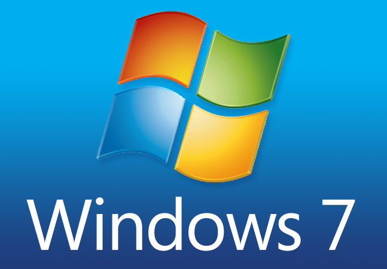

资源分享
-
千恋万花
《千恋＊万花》是由YUZUSOFT于2016年7月29日发售的恋爱冒险类型成人游戏。
同名漫画连载于《月刊Comic Alive》2016年6月号至2017年4月号。 -
星光咖啡馆与死神之蝶
《星光咖啡馆与死神之蝶》是柚子社（Yuzu-soft）制作的恋爱冒险游戏，第十一作，
2019年12月20日全日本发售。游戏讲述了本因意外事故丧生的主人公为了逃脱死亡的命运，
协助死神完成开咖啡馆工作的故事。 -
XShell&XFtp
XShell是一个强大的安全终端模拟软件，它支持SSH1,SSH2，以及Microsoft Windows平台的TELNET协议。
XShell可以在Windows界面下用来访问远端不同系统下的服务器，从而比较好的达到远程控制终端的目的。
Xftp是一个功能强大的SFTP、FTP 文件传输软件。使用了 Xftp 以后，MS Windows 用户能安全地在 UNI-
X/Linux 和 Windows PC 之间传输文件。 -

Windows7 ISO镜像
Windows 7（开发代号：Vienna，后期命名为“7”）为微软公司2009年推出的电脑操作系统，
供个人、家庭及商业使用，一般安装于台式机、笔记本电脑、平板电脑、多媒体中心等。为Vista的“改良版”。 -

VMWare Workstation 15 & keys
VMware Workstation Pro（曾用名VMware Workstation）是VMware公司推出的一款桌面虚拟计算软件，
具有Windows、Linux 版本。此软件可以提供虚拟机功能，使计算机可以同时运行多个不同操作系统。
2015年，VMware Workstation发表12版，VMware Player转型为VMware Workstation的免费版并改
名为VMware Workstation Player，VMware Workstation的付费版定名为VMware Workstation Pro。 -
MikuMikuDance
MikuMikuDance，简称为MMD，又称未来未来舞、萌萌跶，是樋口優所开发的一款免费的
3D动画制作软件， 通过其他3D建模软件将初音未来等VOCALOID虚拟歌手形象制作成3D模块后导入
MikuMikuDance进行动画制作。 “MMD”也用来称呼以此软件制作的动画。 -
Microsoft Office 2016
Microsoft Office是由微软公司开发的办公软件套装，有Microsoft Windows、Windows Phone、
Mac系列、iOS和Android等不同系统的版本。与其他办公室应用程序一样，它包括联合的服务器和
基于互联网的服务。从2007版的Office被称为“Office System”而不叫“Office Suite”，反映出
它们包括服务器的事实。